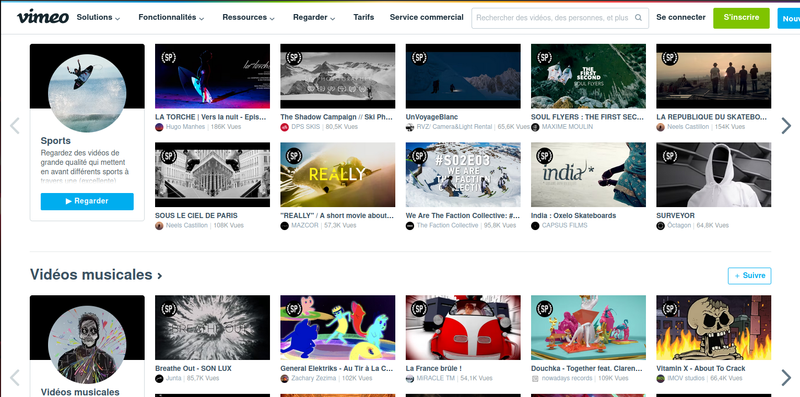

Dailymotion est une entreprise qui propose un service de partage de vidéo, ses concurents
sont donc d'autres entreprises proposant des services similaires, tel que youtube et viméo.
Comme Dailymotion, ces 2 entreprises proposent de pouvoir regarder des vidéos gratuitement, ainsi
que de pouvoir en publier
Bien que Dailymotion, Youtube et Viméo proposent un service similaire, les 3 sites ont quelques différences,
que ce soit au niveau de leur interface ou des prérequis pour leurs services :

Viméo propose de regarder gratuitement les vidéos publiées sur le site, cependant, avec un compte gratuit, il
n'est pas possible de publier plus de 3 vidéo, seules les entreprises n'ont pas de limite de vidéo. L'interface de
Viméo a un aspect très professionnel et simpliste, ce qui est logique quand on considère que c'est un site qui est
avant tout pensé pour une utilisation professionnelle. Les vidéos sont également classées par catégorie
telles que sport, voyage, etc
 Youtube est le leader dans le milieu du partage du vidéo, et ce, depuis des années. Aucune entreprise n'a réussi
à dépasser Youtube depuis des années. Du point de vue d'un utilisateur, Youtube offre de nombreux avantages : que ce soit
la possibilité de regarder presque toutes les vidéos publiées sur le site gratuitement, de pouvoir en publier le nombre
que l'on veut toujours gratuitement, et ce, sous 2 formats possibles : un format "classique" et un format "short".
Ce premier format n'a aucune restriction sur la longueur des vidéos, là où le second limite les vidéos à environ 1
minute maximum. Au niveau de l'interface, elle est centrée sur l'utilisateur en lui proposant des vidéos pouvant
l'intéresser à la fois au format "classique", mais aussi au format "short". Youtube propose également en haut de la
page de filtrer les vidéos en fonction de certains mots clés. Il y a également un "onglet notification", permettant de
prévenir l'utilisateur lorsqu'une vidéo a été publiée sur une chaine à laquelle il est abonné.
Youtube est le leader dans le milieu du partage du vidéo, et ce, depuis des années. Aucune entreprise n'a réussi
à dépasser Youtube depuis des années. Du point de vue d'un utilisateur, Youtube offre de nombreux avantages : que ce soit
la possibilité de regarder presque toutes les vidéos publiées sur le site gratuitement, de pouvoir en publier le nombre
que l'on veut toujours gratuitement, et ce, sous 2 formats possibles : un format "classique" et un format "short".
Ce premier format n'a aucune restriction sur la longueur des vidéos, là où le second limite les vidéos à environ 1
minute maximum. Au niveau de l'interface, elle est centrée sur l'utilisateur en lui proposant des vidéos pouvant
l'intéresser à la fois au format "classique", mais aussi au format "short". Youtube propose également en haut de la
page de filtrer les vidéos en fonction de certains mots clés. Il y a également un "onglet notification", permettant de
prévenir l'utilisateur lorsqu'une vidéo a été publiée sur une chaine à laquelle il est abonné.
Dailymotion propose aujourd'hui des services très similaires à Youtube, que ce soit en terme de format de Vidéo,
ou en terme d'offre de vidéo. La seule différence sur ce dernier point, c'est que Dailymotion a une limite journalière
de nombre et de longueur totale pour la publication des vidéos. Ces limites sont cependant différentes selon la catégorie
de l'utilisateur. Pour l'interface, avant Mai 2023, Dailymotion avait une interface assez proche de celle de Youtube,
mais depuis Mai 2023, L'interface est plus proche de celle de Tik-Tok en mettant en avant à la fois des vidéos courtes
à la verticale et des vidéos au format "classique" à l'horizontale en les disposant sur une seule colonne,
maximisant la visibiliré dechaque vidéo.
Cette question n'a pas vraiment une bonne réponse qui soit unique, mais peut avoir de nombreuses réponses selon
la personne qui répondra à cette question, le cadre d'utilisation voulu, etc. Cependant, on peut généraliser, les
personnes voulant publier des vidéos dans un cadre purement professionnel préférerons Viméo, là où ceux voulant se
faire connaître choisiront Youtube. Enfin, dans un futur plus ou moins proche, Dailymotion pourrai se faire une place
et ainsi concurencer de manière sérieuse les autres sites.